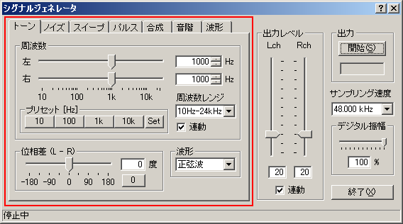
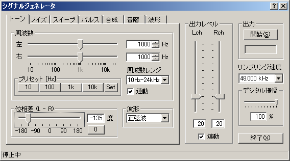
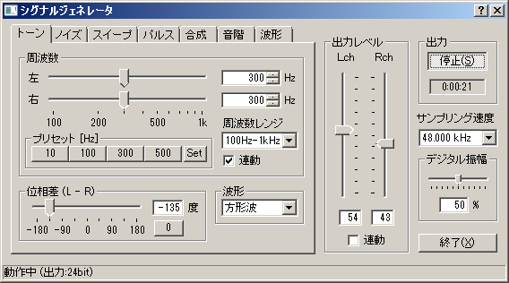
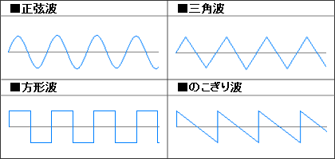

DSSF3 > RA > リファレンス > シグナルジェネレータ

| 項目 | 説明 |
|---|---|
| 周波数スライダー | 出力音の周波数をスライダーまたは数値で設定します。左右のHzの指定エリアに周波数を直接入力することもできます。連動ボタン（Lock)は、左右のどちらかを設定すれば、両方とも同じ値に設定する機能です。ステレオで左右を同じに設定するときに便利です。 |
| プリセット周波数 | 出力信号の周波数をプリセットとして保存します。操作方法は、初めに[Set]ボタンをクリックしてから、スライダーまたは数値入力により周波数を指定、最後に4つあるプリセットボタンのどれかひとつをクリックしてください。一旦プリセットとして保存しておけば、次からはそのボタンをクリックするだけで保存された周波数が指定できます。デフォルトでは10、100、1k、10kHzがセットされています。 |
| 周波数レンジ選択 | 上の画像では100Hzから1kHzの周波数の範囲がスライダーの範囲として選択されています。あらかじめセットされた周波数レンジを選択して、スライダーの周波数レンジを変えることがでます。 |
| 位相角度差指定 | 左右のチャンネル間で出力信号の位相差（Left-Right）を-180度から+180度の範囲で指定することができます。また数値で、直接入力して指定できます。また0度は専用ボタンがあります。 |
| 波形選択 | 出力音の波形を[正弦波][三角波][方形波][のこぎり波]の[任意波形:1]～[任意波形:5]から選択します。 |



DSSF3 > RA > リファレンス > シグナルジェネレータ